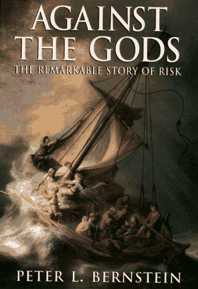

彼得·伯恩斯坦（Peter L. Bernstein）是美国著名经济学家、金融历史学家，曾任职于美联储纽约银行，后创立自己的投资咨询公司。他是《金融分析师杂志》的创始编辑之一，也是《经济学家》杂志评选的二十世纪最具影响力的金融思想家之一。《与天为敌》出版于1996年，是伯恩斯坦历时多年完成的一部史诗级著作，出版后迅速登上《商业周刊》《纽约时报》《今日美国》等多份畅销书榜单，并被译为多种语言，成为全球投资与风险管理领域的经典教材。
全书的核心命题是：人类对风险的理解与管理能力，是将现代文明与古代世界区别开来的最重要的智识成就之一。在古代，命运被视为神祇的旨意，无从预测，只能接受；而当文艺复兴时期的数学家们开始系统研究概率，人类才第一次获得了直面不确定性的工具。伯恩斯坦沿着这一线索，追溯了从古希腊赌徒到布莱斯·帕斯卡、皮埃尔·德·费马、丹尼尔·伯努利，再到卡尔·弗里德里希·高斯、弗朗西斯·高尔顿、约翰·梅纳德·凯恩斯，以及最终至哈里·马科维茨、威廉·夏普等现代金融理论奠基人的完整知识谱系，将七百年的风险思想史娓娓道来。
本书最令人印象深刻之处，在于伯恩斯坦将严肃的数学史与人物传记、时代背景融为一体，使概率论、统计学、博弈论、回归均值等抽象概念在具体的历史叙事中获得了生动的意义。从帕斯卡赌注到大数法则，从正态分布到现代投资组合理论，每一个思想突破背后都是某位天才在特定历史条件下与命运搏斗的故事。书中对行为金融学先驱卡尼曼与特沃斯基的介绍，也为读者理解理性选择理论的局限性提供了极为清晰的铺垫。
《华尔街日报》称本书为"一部非凡的娱乐性与信息量兼具的著作"（"An extraordinarily entertaining and informative book"）。著名经济史学家罗伯特·海尔布罗纳（Robert Heilbroner）评价道："没有人能以如此之多的魅力与激情，写出一部如此核心重要的著作。"（"No one else could have written a book of such central importance with so much charm and excitement."）对于投资者、风险管理者以及一切对人类如何学会与不确定性共处感兴趣的读者，《与天为敌》既是一部思想史，也是一把理解现代金融世界的钥匙。